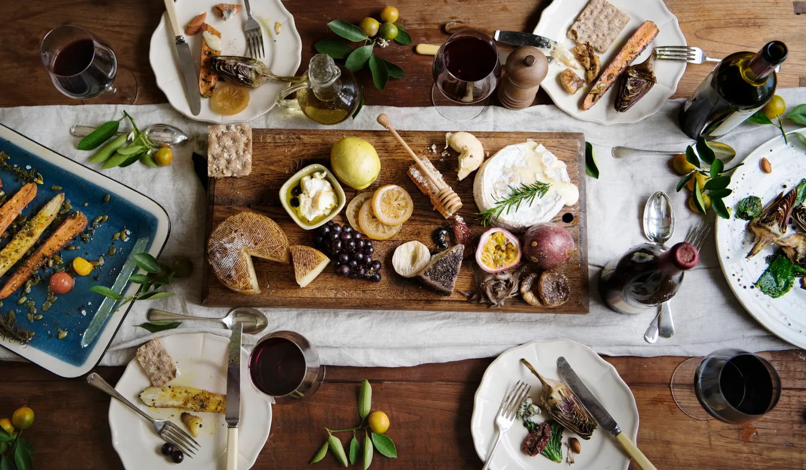
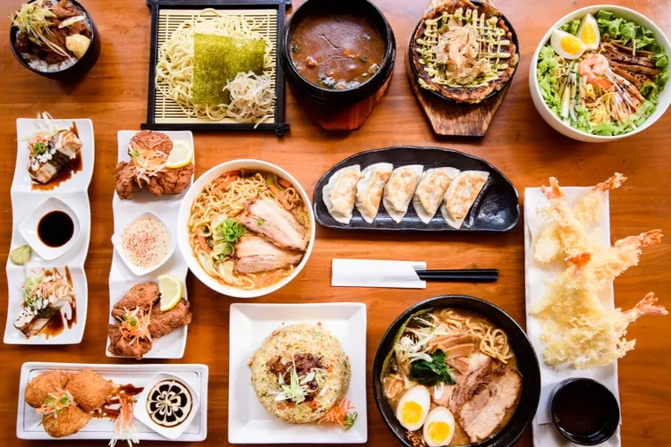
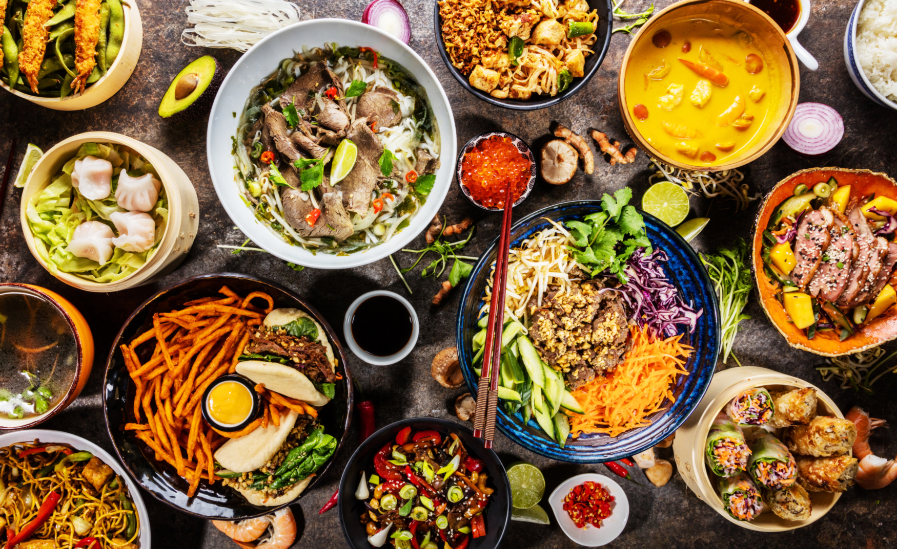
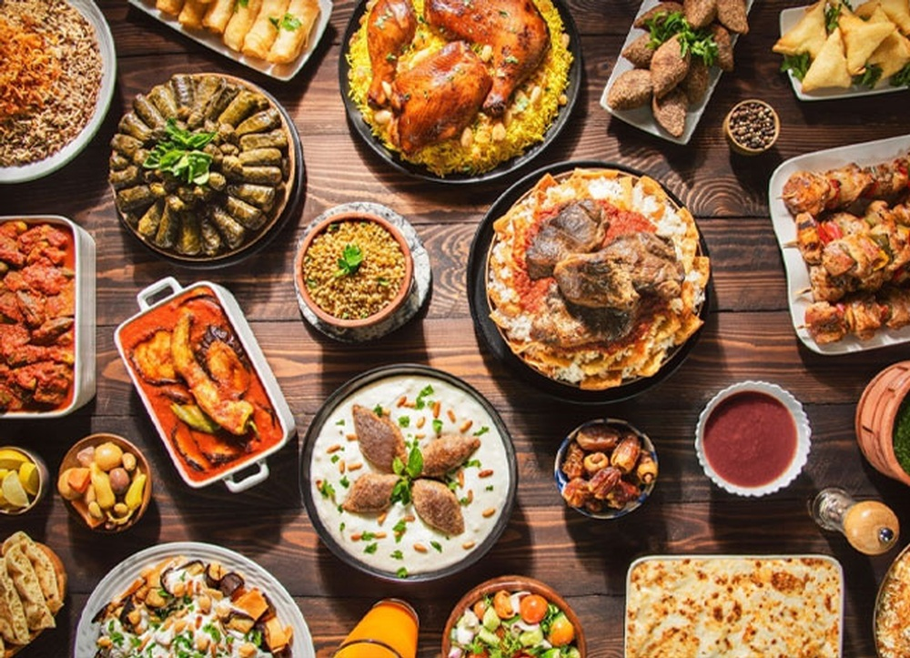

Global Cuisines
Indian Cuisine
Indian cuisine consists of a great variety of food, ranging from Mughlai to Andhra, from Bengali to Rajasthani to various other local cuisines ranging across different states. It is one of the most varied cultured countries with umpteen dishes, each unique in its own for uses of spices and herbs in several forms. In short Indian cuisine is not a single cuisine but a collection of different regional cuisines; each is its own distinct Indian food. And with so much variety, it is no surprise to have it among the 5 great cuisines of the world. As one traverses through the country, one will find a sumptuous variety of snacks, breakfast, lunch and dinner menus across each state. The preparations also vary as local spices and ingredients are prominently used. The beauty of Indian cuisine is the sheer variety of flavours be it vegetarian, eggetarian, seafood or meat dishes. Indian cuisine is at par with international cuisine.

To know more about Indian cuisine and culture here's a quick guide for you!
Tap to know moreHere is a link to the famous Indian Food making Channel's playlist for reference
Tap on this text for the playlistItalian Cuisine
If you have wondered, which is the most famous cuisine in the world? Here's your answer! It is no surprise if your favourite food includes pizza and pasta. Although, Italian food is much more than cheese and pasta. It is incredibly diverse, with a few characteristics that tie it all together. It includes an emphasis on fresh, local ingredients, and letting them speak for themselves without too much fuss. It is a type of Mediterranean cuisine that is deeply rooted in traditions in Italy and infuses regional gastronomies Along with being among the 5 great cuisines of the world, it is also the most copied cuisine! Well, haven't you seen the incredible variety of pizzas we have today? Gelato as a form of dessert is also a very loved sweet dish, which also originates from Italy.

To know more about Italian cuisine and culture here's a quick guide for you!
Tap to know moreHere is a link to the playlist of Italian dishes for your reference
Tap on this text for the playlistFrench Cuisine
French cuisine holds a special place in our hearts. It consists of the cooking traditions and practices from France, with cheese and wine being a major part of the cuisine. The speciality of French cuisine is the techniques used in its making. Although the ingredients used in it are simple, it is made and served with ornate seasonings. French cuisine developed primarily in the city of Paris from the chefs who served the French royalty and then eventually spread throughout the country. Over time, it was exported overseas. It was heavily influenced by culinary art practices in Italy. One of the aspects of international cuisine is called haute cuisine which translates to high cuisine. This shifted the emphasis from abundance and quantity to moderation and quality food making. French cuisine became more accessible to others via detailed recipe guides.
To know more about French cuisine and culture here's a quick guide for you!
Tap to know moreHere is a link to the playlist of French dishes for your reference
Tap on this text for the playlistChinese Cuisine
It is one of the most common cuisines we all are familiar with. Travelling from China till India, it has changed its form, taste and spices to a great extent. But people still lookout for authentic and exotic tastes of the magical Chinese menu, a composite of distinct regional cuisines. In fact, Chinese cuisine itself is further divided into subtypes and regional flavours. It encompasses dishes from China as well as those from the Chinese diaspora outside the country. In India, Chinese cuisine has been transformed to make it spicier with regional flavours. From Gobi Manchurian to Schezwan Noodles, we have successfully modified some Chinese dishes to suit our preferences. Given its popularity worldwide, it ranks among the top 5 cuisines in the world.

To know more about Chinese cuisine and culture here's a quick guide for you!
Tap to know moreHere is a link to the playlist of Chinese dishes for your reference
Tap on this text for the playlistJapanese Cuisine
It has gained popularity among foodies for its culinary aesthetics. A lot of Japanese food is essentially based on rice and miso soup with an emphasis on seasonal ingredients. Sushi, Sashimi, Gyoza, Rice Bowl and Tempura are some of the very common dishes in Japanese cuisine. With this cuisine to there are a lot of varieties as per the region and season. Over the years, the distinct geographical locations have developed their own culinary traditions too. In India, we see a growing love towards Sushi. The growing popularity to try out Japanese dishes ranks it among top 5 cuisines in the world.
To know more about Japanese cuisine and culture here's a quick guide for you!
Tap to know moreHere is a link to the playlist of Japanese dishes for your reference
Tap on this text for the playlistThai Cuisine
With Thailand being one of the most visited countries by Indians, Thai cuisine has successfully gained its popularity among the Indian masses. Spicy soups, Thai-style fried noodles, green and red curries and fried rice are unique to the region. Most Thai dishes have a coconut milk base adding subtle flavours. The similarity of these flavours feels homely to Indian cuisine. Thai cuisine is heavily influenced by Indian, Malaysian and Indonesian cuisine. Thai food has a blend of sweet, spicy and sour tastes. It sees an impeccable balance of local herbs and ingredients which give it freshness.
To know more about Thai cuisine and culture here's a quick guide for you!
Tap to know moreHere is a link to the playlist of Thai dishes for your reference
Tap on this text for the playlistTurkish Cuisine
Turkish cuisine is a Middle Eastern culinary paradise with some of the dedicated and exquisite dishes accepted globally. Turkish cuisine sees a fusion of Mediterranean, Central Asian, European and Balkan cuisines. In fact, the influence of Turkish dishes is also seen across these nations, largely influencing Greek, Egyptian and Levantine cuisine. A blend of spices, not too hot and spicy but a bit of peppery, Turkish dishes has a lot to offer for meat lovers. Koftas, Kebabs, stuffed dolmas and vegetable stews are common food items. Dough-based dessert Baklava filled with chopped nuts and sweetened syrup is one of the most famous items of Turkish cuisine.
To know more about Turkish cuisine and culture here's a quick guide for you!
Tap to know moreHere is a link to the playlist of Turkish dishes for your reference
Tap on this text for the playlist